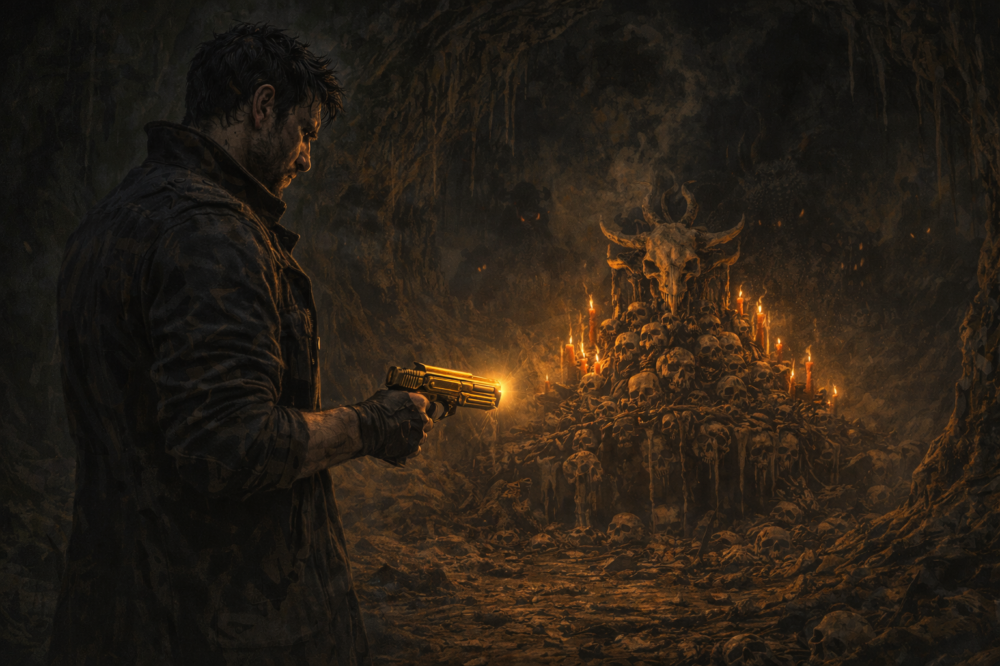

Entré a la cueva ignorando los ladridos desesperados de KAWA. La Golden Gun pulsaba en mi mano como un corazón negro y yo dejé que me guiara.
Adentro había criaturas. Las fui eliminando una por una sin pensarlo, casi en trance. Cada disparo me vaciaba un poco más de Tony y me llenaba de algo más oscuro y frío. Pensé en Elvira y en lugar de amor sentí traición. En lugar de tristeza sentí odio. Y lo peor fue que se sintió bien.
Al fondo de la cueva había un altar de huesos de criaturas antiguas. Me detuve frente a él y sentí que la oscuridad de la Golden Gun ya no era algo externo. Era mía. La había aceptado completamente. Pensé en Elvira una última vez. Pero ya no dolía. Y eso fue lo más aterrador de todo.
 Abrazar la oscuridad y seguir adelante